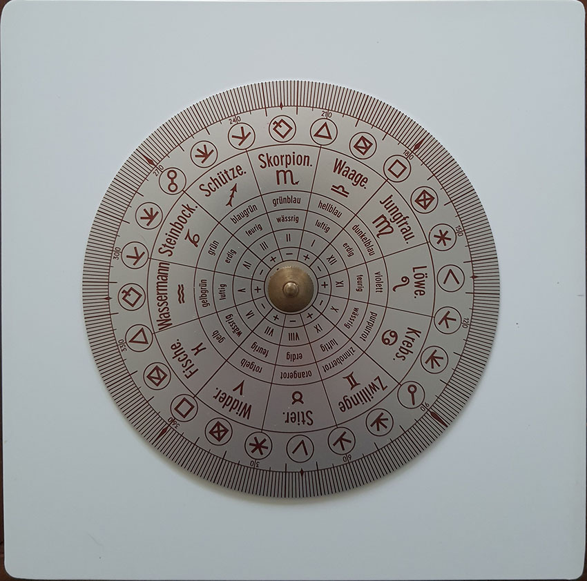
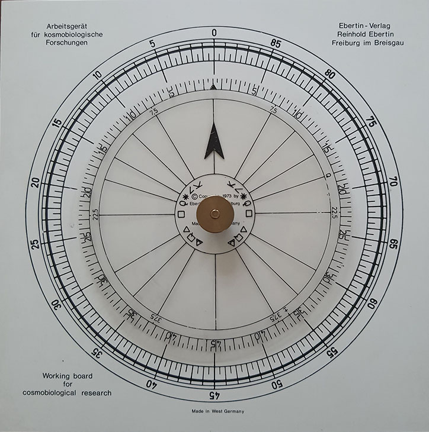

Midpunten
Een midpunt is het punt dat — gemeten langs de ecliptica — precies tussen twee andere punten in de horoscoop ligt. Een voorbeeld: Jupiter staat op 11°30' Stier en Saturnus op 15°00' Kreeft. De afstand tussen beide planeten bedraagt 63°30'. Het midpunt ligt op de helft van die afstand, dus 31°45' verwijderd van zowel Jupiter als Saturnus. Dat komt neer op 13°15' Tweelingen.
Elk midpunt vormt feitelijk een as: het punt in Tweelingen en het tegenoverliggende punt in Boogschutter zijn beide midpunten van Jupiter en Saturnus. Welk van de twee je als het "primaire" midpunt beschouwt, hangt af van de kortste afstand tussen de twee planeten.
Berekening
Om een midpunt te berekenen zet je de standen eerst om naar graden vanaf 0° Ram. Vervolgens tel je beide waarden op en deel je het resultaat door twee.
Voor het bovenstaande voorbeeld:
Jupiter 11°30' Stier = 41°30'
Saturnus 15°00' Kreeft = 105°00'
-------
Optellen 146°30'
Gedeeld door twee: 73°15'
In tekens en graden: 13°15' TweelingenDirecte en indirecte midpunten
Een planeet activeert een midpunt niet alleen wanneer ze er precies op staat (conjunctie of oppositie). Ook planeten die een kwart- of achtste-cirkelaspect vormen met het midpunt worden als relevant beschouwd. Heel soms kom je ook het zestiende-cirkelaspect tegen. Dat levert de volgende aspecten op:
| Deling van de cirkel | Hoek |
|---|---|
| 4 | 90° |
| 8 | 45° |
| 16 | 22°30' |
Enigma ondersteunt de verdeling in 4 en 8.
Een conjunctie of oppositie op het midpunt heet een direct midpunt. Een activering via een van de bovenstaande aspecten heet een indirect midpunt.
Voor de orb — de toegestane afwijking — hanteren veel astrologen een marge van ongeveer 1°30' voor de 360° schijf. Voor de 90° en 45° schijf hanteert men meestal lagere orbs. Zeker als je veel factoren selecteert is het belangrijk de orb klein te houden omdat je anders te veel informatie krijgt.
Planeetfiguren en midpuntstructuren
Op de as van een midpunt kunnen één of meerdere andere punten staan. Als de Maan op 14°15' Tweelingen staat, vormt ze een conjunctie met het midpunt van Jupiter en Saturnus dat we hiervoor berekenden. Dit noteer je als:
Maan = Jupiter / Saturnus
of omgekeerd: Jupiter / Saturnus = Maan.
De duiding van zulke combinaties is te vinden in de standaardwerken, zie literatuurlijst, maar je kunt ze uiteraard ook zelf interpreteren op basis van de planetaire betekenissen.
Een planeet kan tegelijk op meerdere midpunten staan. Staat de Maan bijvoorbeeld zowel op het midpunt van Jupiter/Saturnus als op het midpunt van Mercurius/Mars, dan wordt dat weergegeven in een zogenoemde planeetfiguur (Hamburger school) of midpuntstructuur (Ebertin/Kosmobiologie). Zie ook de paragraaf
De 90°- en 45°-schijf
Omdat alle relevante aspecten op midpunten delers zijn van 360° door een macht van twee, is het mogelijk de horoscoop te "vouwen" tot een kleinere cirkel. Op een 90°-schijf vallen alle punten die onderling een conjunctie, oppositie of vierkant vormen samen. Op een 45°-schijf geldt dat ook voor punten in een halfvierkant (45°) of anderhalf vierkant (135°).
Dit maakt het visueel veel eenvoudiger om midpuntactiviteringen te herkennen dan in de gewone 360°-horoscoop. In het verleden gebruikten astrologen hiervoor handmatige rekenschijven, zie de afbeeldingen hieronder; huidige software genereert deze schijven automatisch.


Halfsommen
Een gangbare alternatieve naam voor midpunt is halfsom: de som van twee planetaire lengtes gedeeld door twee. Deze term is nog steeds gebruikelijk in Duitstalige teksten (
Historie
De systematische toepassing van midpunten in de astrologie wordt toegeschreven aan de Duitse astroloog Alfred Witte, die het concept rond 1919 introduceerde.
Witte was de grondlegger van Die Hamburger Schule, in het Engels bekend als
De Duitse astroloog Reinhold Ebertin nam het idee over en populariseerde het onder de naam Kosmobiologie. Ebertin vereenvoudigde de methode en legde meer nadruk op psychologische duiding. Beide stromingen waren gedurende de twintigste eeuw actief en hebben een blijvende invloed op de moderne midpuntenwerking.
Referenties
- Witte, Alfred; Rudolph, Ludwich; Sieggrün, Friedrich; Lefeldt, Hermann - Regelwerk für Planetenbilder. Hamburg, 1959.
- Rudolph, Ludwig, Witte, Alfred, Lefeldt,Herman - Alfred Witte's Rules for Planetary Pictures: The Astrology of Tomorrow, Hamburg, Hamburg 1959.
- Ebertin, Reinhold - Kombination der Gestirneinflüsse. Aalen, 1974. Engelse vertaling: Combination of Stellar Influences.
- Simms, Maria Kay - Dial detective. Investigation with the 90° dial. San Diego, CA, 1989.